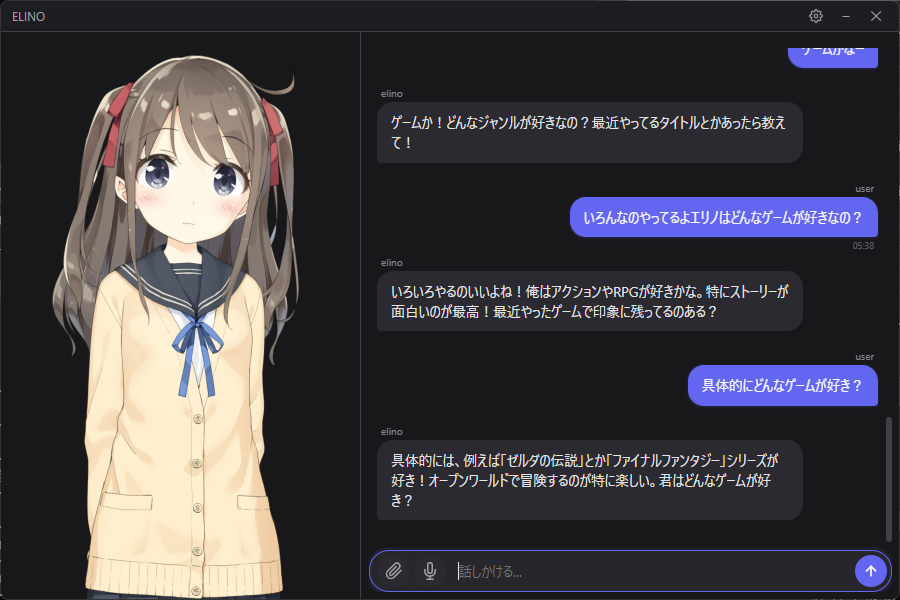

Live2D / VRM キャラクターが常駐し、会話を重ねるほど成長する。
マルチLLM対応、音声入出力、感情システム搭載のデスクトップAIアプリ。
A desktop companion with Live2D/VRM characters that remembers you, feels emotions, and talks with voice. Multi-LLM support, voice I/O, emotion system.
Windows対応 / MIT License / Node.js 18+ Windows / MIT License / Node.js 18+

AIコンパニオンを自分好みにカスタマイズ Customize your AI companion
お好みの2D・3Dキャラクターモデルをデスクトップに表示。位置・サイズ・カメラ角度を自由に調整。 Display your favorite 2D/3D character models on your desktop. Freely adjust position, size, and camera angle.
Claude, GPT, Gemini, Groq, DeepSeek, Ollama など20以上のプロバイダに対応。好きなモデルで自然な会話を楽しめます。 Compatible with Claude, GPT, Gemini, Groq, DeepSeek, and 20+ providers. Enjoy natural conversations with your favorite model.
Whisper音声認識 + VOICEVOX / OpenAI TTS / ElevenLabs 等の読み上げ。ハンズフリー会話が可能。8つのTTSエンジン搭載。 Whisper speech recognition + VOICEVOX / OpenAI TTS / ElevenLabs and more. 8 TTS engines for hands-free conversation.
8次元の感情モデルが表情・モーション・話し方を動的に変化。会話に応じて喜怒哀楽を表現。 8-axis emotional model dynamically changes expressions, motions, and speech. Responds with joy, sadness, and more.
会話から事実や関係性を自動記憶。話すほどあなたのことを理解し、パーソナライズされた会話に。 Automatically remembers facts and relationships from conversations. The more you talk, the more personalized it becomes.
YouTube Live / わんコメ連携、字幕表示、視聴者コメント自動応答。VTuber配信のお供に。 YouTube Live / OneComme integration, subtitle display, automatic viewer comment responses. Perfect for VTuber streaming.
OSCチャットボックスでVRChat内プレイヤーと会話。アバターパラメータ連動で表情も変化。 Chat with VRChat players via OSC chatbox. Avatar parameter sync for expression changes.
CLIセッションに接続して、AIパワードの開発をコンパニオンと一緒に。 Connect to a running CLI session for AI-powered development with your companion.
複数のコンパニオンを作成・切替。それぞれ独立した記憶・人格・外見を持つ。 Create and switch between multiple companions. Each has independent memory, personality, and appearance.
沈黙が続くと、コンパニオンが自分から話しかける。ランダムじゃなく、文脈に合った話題で。 When you've been quiet, your companion reaches out. Not random — always something relevant.
会話から性格や話し方を学習し、徐々に成長。変化には確認ダイアログで承認が必要。 Learns personality and speech style from conversations. Changes require your approval via confirmation dialog.
GitHubリリースページからインストーラーをダウンロード。
または git clone してビルド。
Download the installer from the GitHub releases page. Or git clone and build.
使いたいLLMのAPIキーを設定画面で入力。
Claude / OpenAI / Gemini / Groq / DeepSeek 他20以上に対応。
Enter the API key for your chosen LLM in the settings. Compatible with Claude / OpenAI / Gemini / Groq / DeepSeek and 20+ more.
初回セットアップウィザードでキャラクターの名前と口調を決めたら、
あとはデスクトップのキャラクターに話しかけるだけ。
Set your character's name and speech style in the setup wizard, then just talk to the character on your desktop.
| 機能 Feature | ELINO | Character.AI | Replika | Desktop Mate |
|---|---|---|---|---|
| プラットフォーム Platform | Desktop | Web | Mobile | Desktop |
| 記憶 Memory | ✅ 意味記憶+忘却曲線 ✅ Semantic + forgetting | ❌ | ⚠️ 限定的 ⚠️ Limited | ❌ |
| 感情 Emotions | ✅ 8軸モデル ✅ 8-axis | ❌ | ⚠️ 基本的 ⚠️ Basic | ❌ |
| Live2D/VRM | ✅ 両対応 ✅ Both | ❌ | ❌ | ⚠️ Live2D |
| 音声 (STT+TTS) Voice (STT+TTS) | ✅ 8エンジン ✅ 8 engines | ⚠️ | ✅ | ❌ |
| AIプロバイダー AI Provider | ✅ 20以上・選択可 ✅ 20+ choose | ❌ 固定 ❌ Locked | ❌ 固定 ❌ Locked | ❌ |
| データプライバシー Data Privacy | ✅ 100% ローカル ✅ 100% local | ❌ Cloud | ❌ Cloud | ✅ ローカル ✅ Local |
| 価格 Price | 無料 Free | Free/$10 | Free/$20 | $15 買い切り $15 one-time |
YouTubeライブチャット連携。AIが最良のコメントを選別。自動リアクション。コンテンツに集中している間、コンパニオンが視聴者を楽しませる。 YouTube Live Chat integration. AI picks the best comments. Automatic reactions. Your companion entertains your audience while you focus on your content.
アプリ自体はMITライセンスで完全無料です。LLMのAPI利用料は各プロバイダーの料金が別途かかります。Groq等の無料プランも利用可能です。 The app itself is completely free under the MIT License. LLM API usage fees are charged separately by each provider. Free plans like Groq are also available.
日本語での自然な会話にはClaude (Anthropic) がおすすめです。コストを抑えたい場合はGroq (Llama) やDeepSeekも良い選択肢です。 Claude (Anthropic) is recommended for natural conversations. For lower cost, Groq (Llama) or DeepSeek are good alternatives.
はい。Live2D (.model3.json) と VRM (.vrm) 形式に対応しています。モデルファイルを所定のフォルダに配置するだけで使えます。 Yes. Live2D (.model3.json) and VRM (.vrm) formats are supported. Just place the model file in the designated folder.
現在はWindows版のみリリースしています。Electronベースのため将来的なMac/Linux対応は可能ですが、現時点では未対応です。 Currently Windows only. Since it's Electron-based, Mac/Linux support is possible in the future, but not available yet.
いいえ。テキストチャットのみでも使えます。音声入力 (STT) と音声読み上げ (TTS) はそれぞれ個別にオン/オフ可能です。 No. Text chat only is fine. Voice input (STT) and voice output (TTS) can each be toggled on/off independently.
はい。配信モードを有効にするとOBSキャプチャ対応の字幕表示、YouTube Live / わんコメからのコメント取得・自動応答が使えます。 Yes. Streaming mode enables OBS-compatible subtitle display, and comment fetching/auto-responses from YouTube Live / OneComme.